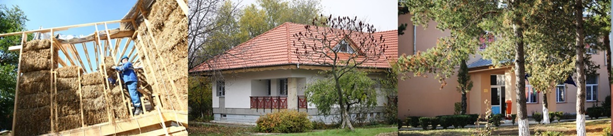

HAB
HAB (Healthy and Accesible Buildings) este programul prin care Habitat for Humanity Romania construieste locuinte si centre comunitare noi, face reparatii si reabilitari, ofera consultanta, trainguri de eficienta si energetica si asistenta cu materiale de constructie.
Solutiile de constructie oferite de Habitat for Humanity pleaca de la ideea simplitatii, a tehnicii de construire abordabile de catre cei fara experienta, a implicarii beneficiarilor si a comunitatii prin voluntariat local si global. Totul se vazeaza pe eficenta maxima, atat pentru a reduce costurile la o suma minima accesibila familiilor cu venituri mici, dar si pentru a construi locuinte economice din punct de vedere energetic.
LOCUINTE NOI
Casele noastre (unifamiliale, duplexuri sau qvadruplexuri) sunt construite cu preponderenta pe structuri usoare din lemn, dupa modelul american.
Din 1997 si pana astazi ne-am specializat pe acest tip de constructie, simplu si eficient. Avem insa si un numar mare de proiecte in care folosim caramida Porotherm de la Wienerberger.
Supraftele utile ale locuintelor noi variaza intre
- 28 mp (locuinte monoparentale)
- 45 - 55 mp (locuinte unifamiliale)
- 70 mp (locuinte pentru familii cu multi copii).
Din acest punct de vedere, casele Habitat for Humanity se afla la limita inferioara a standardelor locative in vigoare in Romania si Uniunea Europeana. O parte dintre locuintele unifamiliale se construiesc mansardabile, astfel incat cresterea familiei tinere asistate sa nu conduca la suprapopulare.
Locuintele se doteaza cu baie, instalatie electrica si sistem de incalzire indepdendent (centrala pe gaz sau pe lemne, in functie de zona).
Costul unei case Habitat for Humanity Romania se ridica la aproximativ 20,000 de euro, ce reprezinta pretul materialelor de constructie. Beneficiarul trebuie sa achite acest cost pe o perioada de 20 de ani, in rate lunare, fara dobanda, fara profit. Acelasi principiu este valabil si pentru renovarile, reabilitarile si asisteanta cu materiale de constructie. Diferenta consta in perioada de rambursare, care este in medie de 3-5 ani.
Renovari si reabilitari
De multe ori insa, conditiile de viata pot fi imbunatatite decisiv prin reabilitarea sau renovarea locuintei ecistente. Este mai ieftin, dar impactul pozitiv asupra evolutiei sociale si a sanatii familiei este foarte mare.
Program de asistenta cu materiale de constructie
O alta metoda prin care Habitat for Humanity Romania poate ajuta este prin distributia de materiale de constructie, pe care ulterior beneficiarii le pun singuri in opera sau cu ajutorul voluntarilor. Nu de putine ori specialistii Habitat for Humanity Romania ofera consultanta beneficiarilor, pe care ii invata cum sa foloseasca materialele pentru a imbunatati conditiile de locuire.
Traininguri de eficienta energetica
Promovam eficienta energetica atat in stadiul de constructie al casei, in care folosim solutii si materiale ce reduc consumul de enerige, dar si prin cursuri dedicate pentru familiile beneficiare, elevi, studenti sau persoane din mediul corporate.
CONSTRUCTII SI REABILITARI CLADIRI DE INTERES PUBLIC
Habitat for Humanity nu construieste doar case, construieste comunitati. Constructia sau renovarea unor cladiri de interes public care ofera acces la educatie si sanatate pentru intreaga comunitate (scoli, gradinite, spitale, centre comunitare) este un bun exemplu al modului in care intelegem revitalizarea comunitatii, concept prin care, in timp, se elimina locuirea saracacioasa. Stim foarte bine sa implicam localnicii in activitatile de constructie, ei vin ca voluntari pe santierele noastre, capata incredere in proiect si dezolta sentimentul de apartenenta - stiu ca centrul le apartine si trebuie sa aiba grija de el pe viitor.
Copyright © 2017. Habitat for Humanity Romania